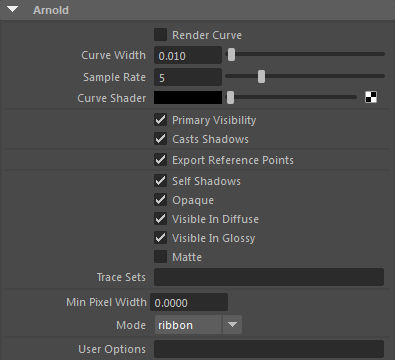
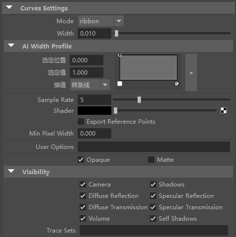
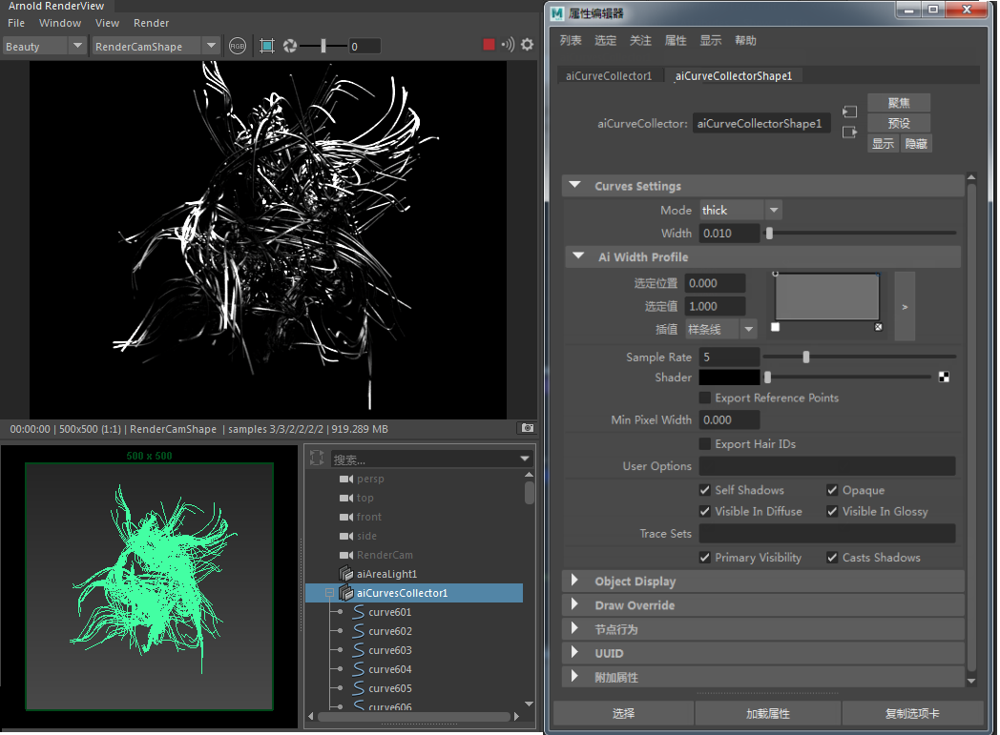

| 延伸阅读 |
|---|
| 有关 Arnold 形状和形状参数的完整文档，请参见《Arnold 用户手册》中的形状。 |

上述设置通过曲线的属性编辑器提供
可以使用 Arnold 渲染 Maya 曲线。通过将一个 Arnold 选项卡附加到 Maya 曲线，用户可以定义用于描述曲线的着色器（默认为头发着色器）、曲线宽度和采样率。
无法使用置换着色器置换样条曲线。

通过曲线收集器，您可以轻松地将多条 NURBS 曲线转换为一个曲线节点（可提高性能）。它允许您在一个节点下对曲线的所有属性（宽度等）进行单一控制。
有关曲线属性的详细信息，请单击此处。
| 有关使用曲线收集器节点的示例场景，请单击 [此处]。 |
|---|

曲线分组到曲线收集器节点下